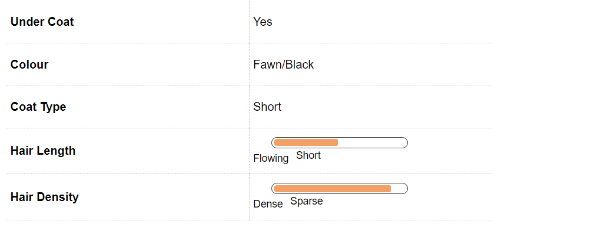
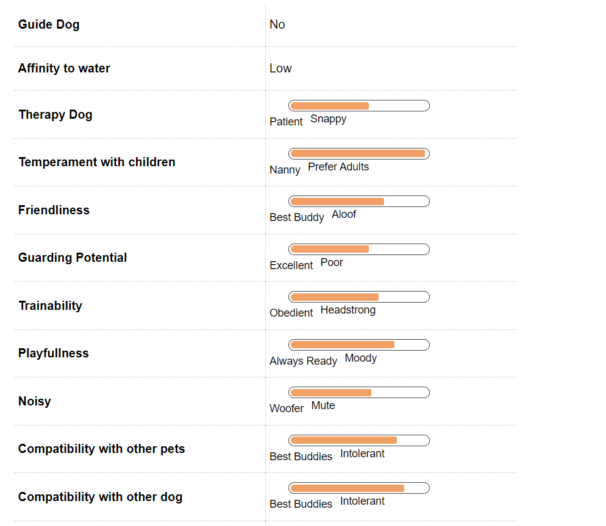

Pug Dog Breed Information
Introduction
With their comical face and hilarious personalities, pugs are the jesters of the canine world. Loving, intelligent and naughty, the pug makes for a great first-time dog. They do very well with children and other animals alike, especially if socialized from a young age. They’re gluttons for love and easy to groom, always ready with an antic that will make you laugh. It’s no wonder that they continue to be amongst the most popular breeds, many centuries after they first came into existence.
Pug, In India became a household name became when Hutch used it for advertisement. Even all the adults in the house along with the children became a fan of this breed overnight after the Hutch (Now Vodafone) advertisement aired and from that date this breed has become well known in India at least. This breed though has been existence for far longer, its existence dates to 400 BCE where Tibetan Monks used to keep this breed as pets in the Tibetan Monasteries. Pug has been one pampered specie which has been treated to all pleasures of Royal life by the Kings who treated this small breed as their lapdogs and pampered them immensely. It is interesting to note that the name Pug came around from a similarly faced specie of monkey who was also called pug. Pug also has a secret organization names after him. In the year 1740, the Roman Catholics of the world named an organization called ‘Order of the Pug’. The reason why Pug was chosen as a symbol for this Catholic Organization was because this breed represents Loyalty and Trustworthiness. This is probably one of the most adaptable specie around, it can be trained in anyway one would want. Pugs are no doubt one of the most charming breeds around and can win over anyone. This breed loves laughing and live, it is lively and most appropriately Sunshine in dog form. This breed also gets along with other breeds, cats and even humans. The one that gets along with anyone and everyone. This breed is though somewhat bad at physical activity, it isn’t the ideal jogging buddy but the perfect cuddly bud. They are a proud member of the American Kennel Club’s toy club. This breed is somewhat clingy and doesn’t like being left alone. The ironic thing is that the Pug looks like its deep in contemplation about the complexities of dog life, but it actually is thinking about a dog prank.
History
Several centuries before a popular mobile service provider made Chinese pugs famous in India through a series of endearing ads, the pug was a royal dog. Their history can be traced back to China, where they were prized by the emperors of the Han Dynasty (B.C. 206 to A.D. 200). Here, they lived in luxury, often guarded by a soldier, and spent their lives as canine companions of royalty. Legend has it that the Chinese prized the pugs’ trademark wrinkles because they resembled good luck symbols in their language. Pugs were even known to be bred with wrinkles that spelt the Chinese letters for the word “prince”. In the 1500s and 1600s, when trade channels opened between China and Europe, the Dutch brought the first pugs to European soil. Their royal connections continued, with the breed becoming popular among royal families across Europe. Pugs were also popular muses for artists, with William Hogarth and Goya featuring the royal dog in their paintings. When the British overran the Chinese Imperial Palace in 1860, they brought back the pugs they found there and these are credited with producing several of the most sought-after pug bloodlines in England. Pugs became very popular in the Victorian era, with Queen Victoria’s fascination with the breed; she even bred several pugs. While pugs continue to retain their popularity in most countries, they shot to fame in India after an advertising campaign made them their mascot. This has led to over-breeding and inbreeding amongst unethical and backyard breeders in the country, a consequence that is fast becoming an overpopulation issue.
The literal meaning and the motto of Pug is ‘a lot in a little’ and is the perfect way to describe this breed. Referred by several names such as Mopshond in Holland, Dutch Pug in England, this breed derives its name from the marmoset “pug” monkey with whom it has a lot of features in common.
This breed finds its origin in China, where mentions of it has been found in writings of the Philosopher Confucius. This breed was also popularly known as lo-sze. The record of it evidence can be found as back as 700 BCE. This breed was a favorite among the Chinese Emperors and likewise. They also had palaces, attendants and all things royal to their disposal. This cute little breed was also used as gift items by Chinese Emperors where they were given to important people in Korea and Japan. This spread the popularity of this breed through the Asian region at least. There has been evidences of discovery of Pug in Europe sometime around the 18th Century. It was the Dutch East India Company which facilitated the spread of this breed throughout Europe through the trade routes between Portugal, Netherlands, Spain, France and England.
Soldiers also. It was only in England that the true shaping of the modern-day pug took place because of cross breeding between the Morrison Line and Willoughby line. This breed is also considered highly fashionable. This was a time when the working dog breed had started to gain popularity and it is during this time only that the decline in popularity of pug began because they weren’t considered a very useful breed. It was the Queen of England who started favoring this breed and bringing it back to popularity. In America, the pug found entry a little while after the civil war. The American Kennel club accepted pug as its member sometime in 1885. It was the 1950’s where Pug reached the peak of its popularity. Chucky was a popular known pug who won the Westminster Kennel club show in the year 1981.
There is another popular story about Pug in France. Around 1790, Napoleon’s wife had a pug whom she called Fortune who carried secret messages from her to him under his collar while she was in prison.
Unique Aspects
Pugs are brachycephalic, with flat face and short noses. This means they don’t do very well in very hot weather or too much humidity. Longer muzzles facilitate the cooling of air before it reaches the lungs, a feature that pugs lack. It’s recommended that they stay indoors in very warm places. Despite their short coats, pugs shed a lot, so watch out for fur-lined furniture and clothes, if you’re not a regular groomer. They also wheeze, snort and snore rather loudly, an endearing characteristic for most and also the pug’s mode of communication with humans, but an annoyance for sensitive ears. That said, pugs are not known to be great barkers, so the most you will have to get used to is a wheeze or a snort, from an often out-of-breath dog. The way to a pug’s heart is through the stomach, but watch out for overeating. A healthy diet is best recommended for a comfortable, healthy pug. They need constant human attention and affection, so don’t mistake your pug for a watchdog who can stay outdoors for extended periods of time; neither their hearts nor their heads are willing. Pugs are affable, easy going dogs and do really well as first-time pets.
Fun Trivia

Pug marks Pugs wound their way into the hearts and homes of several Indian families, after a popular mobile service provider created a series of endearing ads with the pug as the faithful mascot, the personification – so to speak – of a ‘network that always follows’. Centuries before this, Josephine Bonaparte had a pug named Fortune, before she married her famous husband, Napoleon Bonaparte. When she was imprisoned in Les Carmes prison, Fortune was the only visitor she was allowed and she would often tuck missives for her family in his collar.
Vital Stats:
Dog Breed Group:
Toy Dogs
Tail Type:
Curled
Getting A Puppy Home:
Pocket Friendly
Life Span:
7 to 8 years
Pros and Cons
| Pros |
Cons |
|
Pug is one of the friendliest breed out there, it has a good relationship with everyone it meets including cats. It is a cuddly breed which doesn’t need a lot of exercise and would be perfectly be happy to stay at home curled in a corner. They are extremely good with kids as well. They love playing and are jovial in nature. You can always find them happy and jumping around. They are funny and can make anyone laugh. They don’t require a lot of exercise and they don’t like working out, they can stay in a corner and be happy. Pugs are curious by nature and make great travel buddies. They love going around and exploring. They make good travel companions.
|
This breed suffers from several health problems which can push the BP and bills upwards. They love eating and don’t know when to stop which makes them overeat like anything and gain a lot of weight. They also shed a lot of hair which leads to finding dog hair everywhere and gets difficult. This breed is also extremely clingy, it will follow you anywhere and everywhere which can get slightly irritating after a while. They also have a habit of getting fat which leads to problems. They are snore a lot which gets tough to handle after a time. It is a strong-minded breed which might get in trouble a lot of times.
|
Pug Maintenance & Effort
Grooming
Don’t let their short coarse coats fool you: pugs need plenty of attention in the grooming department. They shed a whole lot and need regular grooming, if you don’t fancy walking around with fur stuck to your clothes. Pugs have a double coat: a soft undercoat and a coarser topcoat. It’s the latter that will keep you busy. The numerous wrinkles on their faces can be a health hazard, if they aren’t cleaned regularly. Moisture trapped in their folds is a great magnet for infections, so remember to dry after you clean. Taking a soft washcloth to your pug’s wrinkles once or twice a week should do the trick.
Feeding and Nutrition
Good food is the key to good health and it is important to note that the pug eats a good meal to be healthy. A pug has a habit of over eating and their portion sizes need to be monitored very closely to ensure that they don’t grow over weight. Excess weight is bad for this specie because it already suffers from breathing issues and every extra pound can be a recipe for disaster. Free feeding should be avoided in this breed as it doesn’t know where to stop. There should be a regular schedule for breeding the pug. Erratic timing and unorganized meals can be harmful for the breed. A young pup about 8 weeks to 3 months old should be fed small portions at least 4 times a day. When the pup turns 3 months old, the feeding should be reduced to thrice a day. When the pug turns 6 months old, the feeding should be decreased to twice a day and it can be further reduced to once a day for an adult pug but small portions twice a day is also fine. The breed should be given a lot of water and there should be water always available. Along with a healthy diet there also needs to be a lot of exercise for the breed to ensure that it doesn’t put on weight. A young pug needs more calories about 50 calories per pound and adult needs 40 calories per pound. The diet should be balanced and there should be ample of minerals, vitamins, fat etc. to make sure that the diet is holistic.
Pug Hair & Coat

Pug Health & Care
Common Health Issues
Initially known to be relatively healthy dogs, over-breeding and inbreeding to facilitate a sharp rise in popularity, has made the pug susceptible to several ailments, genetic and otherwise. They don’t fare well in hot climates and are prone to several respiratory infections, due to their brachycephalic faces. Most respiratory conditions can be treated with medication or corrected through surgery. Pugs were bred to have numerous wrinkles on its faces, which, while endearing to the eye, cause them to be prone to skin rashes and infections. Pugs have cute bulging eyes, but if you aren’t careful while handling them, especially on walks, this can turn into a serious issue. Never tug on their collars too hard; it can cause their eyes to pop right out of their sockets. This condition is called proptosis and will need surgery to be corrected. They’re also prone to distichiasis, an abnormal growth of eyelashes on the margin of the eye; progressive retinal atrophy, a degenerative disease of the retinal visual cells that eventually leads to blindness; and entropion , where the lower eyelid rolls inward, causing the hair on the lid to rub on the eye and irritate it. Amongst several other conditions, pugs are prone to Cheyletiella Dermatitis or ‘Walking Dandruff’, a contagious skin condition that is caused by a small mite; Pug Dog Encephalitis, a fatal inflammatory brain disease unique to pugs; epilepsy; nerve degeneration; congenital heart diseases; corneal ulcers; dry eye; staph infection; hip dysplasia; Legg-Perthes Disease; Patellar Luxation and vaccination sensitivity.
Pugs aren’t the healthiest of breeds out there. They suffer from several ailments that require costly treatments. The easiest way to keep a pug clear of health problems is through regular exercise and balanced diet.
Pugs suffer from a variety of skin problems, they are prone to get skin diseases more than any other breed. Generally, the causes of skin issues in Pugs is poor hormonal balance, the parasite attack, a bad immunity system among other things. A very common type of skin problem that Pugs suffer from is called Pyoderma, under this there are small red bumps that appear on the skin of the breed and there are also blood-filled blisters that this breed suffers from. It generally attacks the folds between the lips and the toes. The only way to prevent this by carrying regular inspections of the skin of the pug and to prevent it from happening at the earliest. Younger pugs have odor problems which are generally caused by yeast infections. The two-other type of problems that are common among pugs are those of ringworms, which attack dogs with lower immune systems. The second one is of atopy where dogs develop a higher sensitivity towards certain types of allergens. All of these are treatable conditions, but they need to be dealt properly.
There are also major concerns about the eyes of the breed, such as entropion where the eyelids roll backwards. Another thing that Entropion causes is Pigmentary keratitis where there is irritation and inflammation in the cornea. The breed Is also prone to Cataracts, dry eyes and progressive retinal atrophy. All of these can be prevented by taking care of the eyes properly and regular checkups. Ethiopian is a condition which is genetic in nature. Another ailment that the breed is prone to is Exposure Keratopathy in which there is a pigmentation caused towards the center of the breed. It affects several pugs and generally is hereditary in nature. It is preventable also by using a tropical eye lubricant.
Pugs come with funny noses which causes them to have certain breathing difficulties. Generally, the problems that are faced are labored respiration and they tend to get over heated during the summers. The snoring that is caused in pugs are also because the airway passage is blocked. This breed comes with a smallish and relatively tiny nasal cavity the effect of that can be seen in their noses and this leads to this breed suffering from several breathing problems. There are times when the little noses lead to getting fluids and snort stuck in their noses which leads them towards a bad sneezing attack. Stenotic nares are not present in every breed but it’s a common condition in pugs. Under this, the breed has nasal tissues which are soft and breathing leads to the tissue collapsing which results in breathing issue. Another condition that this breed is prone to is called Collapsed Trachea where the cartilage rings in the windpipe of the dog give up. To detect this condition, there should be a lookout for trauma in the chest and excessive sneezing. Proper monitoring and treatment can make this condition better. For a breed like pug it is very important to keep a monitoring how it is breathing because it is very prone to breathing problems.
The Tail problems
-
Pug has a tail which is curled, and curled tails come with problems. The folds in the tail retains moisture and that causes a lot of problems such as flees living in this curled moist part. Pug cannot reach back and tickle and get rid of the flees in its tail which leads to faster breeding of these flees. This causes immense irritation to the breeding which may end up chasing the tail around to get rid of the fleas but may end up injuring themselves even more. This can also lead to some form of allergies. The signs that show that there is a problem is that the tail gets redder and there is often blood around the tails.
Another condition that the breed may suffer from is a problem in the central nervous system which is highly inflammatory. The medical term for this condition is necrotizing meningoencephalitis (NME). The condition isn’t specific for pugs but is common in other breeds also. It is categorized by the death of brain cells.
The target of this disease are generally pugs which are either young or middle aged. The most common age of this disease to strike are 9-18 years old but that isn’t restricted to that. The symptoms of this condition are seizures, blindness, restlessness, un coordination among other things. There is no permanent cure for this disease per say but it can be controlled on an everyday basis by using medication.
Pug Behavior

Temperament
Pug are extremely friendly dogs and are excellent with children. Their small size and relatively few activity requirements make them perfect for apartment living. Pugs are a vivacious and fun loving breed. They are often called ‘shadow’, because of their propensity to glue themselves to their family’s side. They thrive in human attention and affection, happy to perform for a few oohs and aahs. They’re not temperamental and don’t get threatened easily by the presence of other animals, especially with early socialisation.
Environment
Pugs are homely dogs, happy to be indoors and catch several loud, snoring snoozes as long as they are walked often. Don’t expect your pug to be a hunter or a retriever; these dogs are lap sitters, entertainers and snoozers! They do really well in homes with small children as well as other animals, especially if socialised at a young age. They make great first-time pets, although they struggle in extremes of hot or cold temperatures. They’re not great outdoor dogs because of this, so make sure you consider a pug companion only if you like an indoor dog.
Training & Intelligence
When training pugs, always remember that patience is a virtue. They have an even temperament and are happy-go-lucky dogs, so it isn’t too hard to train them. Not, especially, if you carry around a handful of treats. Pugs will do anything for a treat or ten! As in the case of several toy breeds, early socialisation and training will result in a content, well-rounded adult. Pugs are people pleasers and love to be around their humans almost as much as they love food, so remember to use positive reinforcement methods whilst training. So, quality time, quality food and quality training are the holy triumvirate for this adorable canine.
Pug Breeding
Procreation
There aren’t many complications attached to their breeding. As always, the thing to be most concerned about is having enough families lined up to adopt the puppies, so that they don’t fall into the wrong hands or get ill-treated by careless families. Pugs attain sexual maturity anywhere between six to nine months of age, though they will be too young to breed at this point. Breeding, if at all, is recommended after the dog reaches two years of age. The average litter size is about three puppies. If you’re mating your dogs for the first time, it’s recommended that you take the help of a veterinarian.
Puppies
Pugs are perfect family pets and excellent with children. The puppies are naughty and adorable. While easy to socialise especially at a young age, be sure to housebreak them as early as you can. While they’re not quick learners, food and positive reinforcement are the best ways to get a pug’s attention.
Pug Appearance
Body
Pugs are square, thickset dogs, usually weighing between 13 to 17.5lb (6-8kg). They stand 13-15 inches tall. Their heads are large and round, with eyes that match the same description. They have deep, distinct wrinkles on their faces, which adds to their cuteness quotient. The moles on a Pug's cheeks are called "beauty spots". The muzzle is black with a clearly defined thumb mark on the forehead. The ears are black and soft to the touch. They have undershot jaws, where the lower jaw extends slightly beyond the upper jaw. They have a tightly curled tail that looks like a dollop of cream, another signature pug characteristic. Pugs usually have black, fawn, apricot fawn or silver fawn coats.